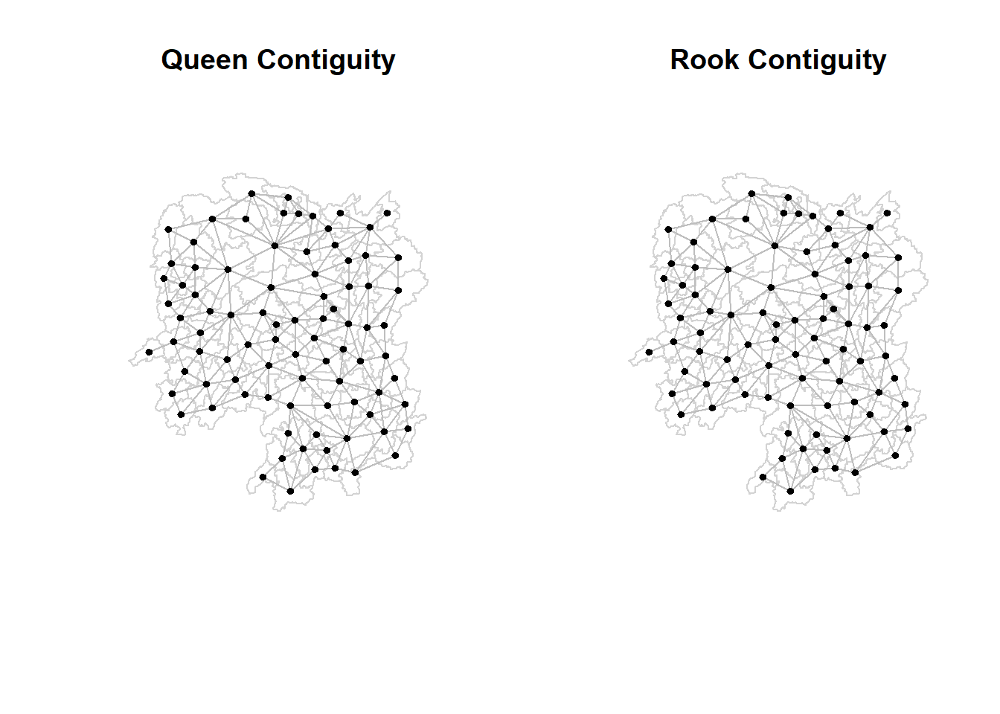

pacman::p_load(sf, spdep, tmap, tidyverse, knitr,dplyr, GWmodel)In-class Exercise 4
Importing the packages
Importing data
hunan <- st_read(dsn="data/geospatial", layer="Hunan")Reading layer `Hunan' from data source
`C:\guacodemoleh\IS415-GAA\In-class_Ex\In-class_Ex04\data\geospatial'
using driver `ESRI Shapefile'
Simple feature collection with 88 features and 7 fields
Geometry type: POLYGON
Dimension: XY
Bounding box: xmin: 108.7831 ymin: 24.6342 xmax: 114.2544 ymax: 30.12812
Geodetic CRS: WGS 84hunan2012 <- read_csv("data/aspatial/Hunan_2012.csv")Our County variable can be our unique identifier. But if you inspect the dataset, there is exactly one unique County field each in both datasets. So we can just use the left_join() function without calling out the unique identifier.
hunan <- left_join(hunan, hunan2012) %>% select(1:4, 7, 15)
## do not rerun this cell!Visualisation of Choropleth Maps
Present the map using qtm() from the tmap package.
basemap <- tm_shape(hunan) + #placeholder
tm_polygons() + #plotting
tm_text("NAME_3", size=0.5)
gdppc <- qtm(hunan, "GDPPC")
tmap_arrange(basemap, gdppc, asp=1, ncol=2) # stitching them to be viewed together
- qtm refers to quick thematic mapping.
- To make detailed choropleth maps, it is better to do so using the usual tmap properties.
- More styling guides like tm_facets() from Prof. Kam Tin Seong can be referred to here
Contiguity Spatial Weights
Using polygon2nb() from spdep. - There is a queen argument, which is set to TRUE by default.
wm_q <- poly2nb(hunan, queen=TRUE)
summary(wm_q)Neighbour list object:
Number of regions: 88
Number of nonzero links: 448
Percentage nonzero weights: 5.785124
Average number of links: 5.090909
Link number distribution:
1 2 3 4 5 6 7 8 9 11
2 2 12 16 24 14 11 4 2 1
2 least connected regions:
30 65 with 1 link
1 most connected region:
85 with 11 links- If we want to use the Rook’s case, set
queento be False.
wm_r <- poly2nb(hunan, queen=FALSE)Visualisation of Contiguity Weights
Let’s establish the coordinates for all the spatial entities so that the centroids can be generated.
longitude <- map_dbl(hunan$geometry, ~st_centroid(.x)[[1]])
latitude <- map_dbl(hunan$geometry, ~st_centroid(.x)[[2]])
coords <- cbind(longitude, latitude)
coords <- cbind(longitude, latitude)
head(coords) longitude latitude
[1,] 112.1531 29.44362
[2,] 112.0372 28.86489
[3,] 111.8917 29.47107
[4,] 111.7031 29.74499
[5,] 111.6138 29.49258
[6,] 111.0341 29.79863- Try not to sort the data else the referencing design will change.
Then let’s plot the Queen and Rook’s cases side by side.
par(mfrow=c(1,2))
plot(hunan$geometry, border="lightgrey", main="Queen Contiguity")
plot(wm_q, coords, pch = 19, cex = 0.6, add = TRUE, col= "gray")
plot(hunan$geometry, border="lightgrey", main="Rook Contiguity")
plot(wm_r, coords, pch = 19, cex = 0.6, add = TRUE, col = "gray")
- Notice that there are more neighbours established for Queen Contiguity than Rook Contiguity.
Distance based neighbours
To derive distance-based weights, we will use spdep’s dnearneigh function.
Let’s get the list of the k-nearest number of neighbours.
k1 <- knn2nb(knearneigh(coords)) #setting a listk1dists <- unlist(nbdists(k1, coords, longlat = TRUE))
summary(k1dists) Min. 1st Qu. Median Mean 3rd Qu. Max.
24.79 32.57 38.01 39.07 44.52 61.79 Look at the max value. We do not want any entity to have zero neighbours. So the floor value for distance should be set to at least 62.
Distance measurements are usually done in projected coordinate system.
Grid distance projection is done here with using
longlat= TRUE. The point coordinates must be in decimal degrees. The distances are calculated in kilometres.It may not be very accurate but the computed distances should be relatively close to the actual values. This is a good method if we are unsure of the country’s projected coordinate system.
Fixed distance weight matrix
wm_d62 <- dnearneigh(coords, 0, 62, longlat = TRUE)
wm_d62Neighbour list object:
Number of regions: 88
Number of nonzero links: 324
Percentage nonzero weights: 4.183884
Average number of links: 3.681818 - With an average number of 3.68 links, it means for each spatial entity, there is an average of about 4 neighbours identified based on distance.
str(wm_d62)List of 88
$ : int [1:5] 3 4 5 57 64
$ : int [1:4] 57 58 78 85
$ : int [1:4] 1 4 5 57
$ : int [1:3] 1 3 5
$ : int [1:4] 1 3 4 85
$ : int 69
$ : int [1:2] 67 84
$ : int [1:4] 9 46 47 78
$ : int [1:4] 8 46 68 84
$ : int [1:4] 16 22 70 72
$ : int [1:3] 14 17 72
$ : int [1:5] 13 60 61 63 83
$ : int [1:4] 12 15 60 83
$ : int [1:2] 11 17
$ : int 13
$ : int [1:4] 10 17 22 83
$ : int [1:3] 11 14 16
$ : int [1:3] 20 22 63
$ : int [1:5] 20 21 73 74 82
$ : int [1:5] 18 19 21 22 82
$ : int [1:6] 19 20 35 74 82 86
$ : int [1:4] 10 16 18 20
$ : int [1:3] 41 77 82
$ : int [1:4] 25 28 31 54
$ : int [1:4] 24 28 33 81
$ : int [1:4] 27 33 42 81
$ : int [1:2] 26 29
$ : int [1:6] 24 25 33 49 52 54
$ : int [1:2] 27 37
$ : int 33
$ : int [1:2] 24 36
$ : int 50
$ : int [1:5] 25 26 28 30 81
$ : int [1:3] 36 45 80
$ : int [1:6] 21 41 46 47 80 82
$ : int [1:5] 31 34 45 56 80
$ : int [1:2] 29 42
$ : int [1:3] 44 77 79
$ : int [1:4] 40 42 43 81
$ : int [1:3] 39 45 79
$ : int [1:5] 23 35 45 79 82
$ : int [1:5] 26 37 39 43 81
$ : int [1:3] 39 42 44
$ : int [1:2] 38 43
$ : int [1:6] 34 36 40 41 79 80
$ : int [1:5] 8 9 35 47 86
$ : int [1:5] 8 35 46 80 86
$ : int [1:5] 50 51 52 53 55
$ : int [1:4] 28 51 52 54
$ : int [1:6] 32 48 51 52 54 55
$ : int [1:4] 48 49 50 52
$ : int [1:6] 28 48 49 50 51 54
$ : int [1:2] 48 55
$ : int [1:5] 24 28 49 50 52
$ : int [1:4] 48 50 53 75
$ : int 36
$ : int [1:5] 1 2 3 58 64
$ : int [1:5] 2 57 64 66 68
$ : int [1:3] 60 87 88
$ : int [1:4] 12 13 59 61
$ : int [1:5] 12 60 62 63 87
$ : int [1:4] 61 63 77 87
$ : int [1:5] 12 18 61 62 83
$ : int [1:4] 1 57 58 76
$ : int 76
$ : int [1:5] 58 67 68 76 84
$ : int [1:2] 7 66
$ : int [1:4] 9 58 66 84
$ : int [1:2] 6 75
$ : int [1:3] 10 72 73
$ : int [1:2] 73 74
$ : int [1:3] 10 11 70
$ : int [1:4] 19 70 71 74
$ : int [1:5] 19 21 71 73 86
$ : int [1:2] 55 69
$ : int [1:3] 64 65 66
$ : int [1:3] 23 38 62
$ : int [1:2] 2 8
$ : int [1:4] 38 40 41 45
$ : int [1:5] 34 35 36 45 47
$ : int [1:5] 25 26 33 39 42
$ : int [1:6] 19 20 21 23 35 41
$ : int [1:4] 12 13 16 63
$ : int [1:4] 7 9 66 68
$ : int [1:2] 2 5
$ : int [1:4] 21 46 47 74
$ : int [1:4] 59 61 62 88
$ : int [1:2] 59 87
- attr(*, "class")= chr "nb"
- attr(*, "region.id")= chr [1:88] "1" "2" "3" "4" ...
- attr(*, "call")= language dnearneigh(x = coords, d1 = 0, d2 = 62, longlat = TRUE)
- attr(*, "dnn")= num [1:2] 0 62
- attr(*, "bounds")= chr [1:2] "GE" "LE"
- attr(*, "nbtype")= chr "distance"
- attr(*, "sym")= logi TRUEVisualisation of fixed distance
plot(hunan$geometry, border="lightgrey")
plot(wm_d62, coords, add=TRUE)
plot(k1, coords, add=TRUE, col="red", length=0.08)
Transforming weights to Inversed Distance
Compute the distances between areas using nbdists().
dist <- nbdists(wm_q, coords, longlat = TRUE)
ids <- lapply(dist, function(x) 1/(x))
ids[[1]]
[1] 0.01535405 0.03916350 0.01820896 0.02807922 0.01145113
[[2]]
[1] 0.01535405 0.01764308 0.01925924 0.02323898 0.01719350
[[3]]
[1] 0.03916350 0.02822040 0.03695795 0.01395765
[[4]]
[1] 0.01820896 0.02822040 0.03414741 0.01539065
[[5]]
[1] 0.03695795 0.03414741 0.01524598 0.01618354
[[6]]
[1] 0.015390649 0.015245977 0.021748129 0.011883901 0.009810297
[[7]]
[1] 0.01708612 0.01473997 0.01150924 0.01872915
[[8]]
[1] 0.02022144 0.03453056 0.02529256 0.01036340 0.02284457 0.01500600 0.01515314
[[9]]
[1] 0.02022144 0.01574888 0.02109502 0.01508028 0.02902705 0.01502980
[[10]]
[1] 0.02281552 0.01387777 0.01538326 0.01346650 0.02100510 0.02631658 0.01874863
[8] 0.01500046
[[11]]
[1] 0.01882869 0.02243492 0.02247473
[[12]]
[1] 0.02779227 0.02419652 0.02333385 0.02986130 0.02335429
[[13]]
[1] 0.02779227 0.02650020 0.02670323 0.01714243
[[14]]
[1] 0.01882869 0.01233868 0.02098555
[[15]]
[1] 0.02650020 0.01233868 0.01096284 0.01562226
[[16]]
[1] 0.02281552 0.02466962 0.02765018 0.01476814 0.01671430
[[17]]
[1] 0.01387777 0.02243492 0.02098555 0.01096284 0.02466962 0.01593341 0.01437996
[[18]]
[1] 0.02039779 0.02032767 0.01481665 0.01473691 0.01459380
[[19]]
[1] 0.01538326 0.01926323 0.02668415 0.02140253 0.01613589 0.01412874
[[20]]
[1] 0.01346650 0.02039779 0.01926323 0.01723025 0.02153130 0.01469240 0.02327034
[[21]]
[1] 0.02668415 0.01723025 0.01766299 0.02644986 0.02163800
[[22]]
[1] 0.02100510 0.02765018 0.02032767 0.02153130 0.01489296
[[23]]
[1] 0.01481665 0.01469240 0.01401432 0.02246233 0.01880425 0.01530458 0.01849605
[[24]]
[1] 0.02354598 0.01837201 0.02607264 0.01220154 0.02514180
[[25]]
[1] 0.02354598 0.02188032 0.01577283 0.01949232 0.02947957
[[26]]
[1] 0.02155798 0.01745522 0.02212108 0.02220532
[[27]]
[1] 0.02155798 0.02490625 0.01562326
[[28]]
[1] 0.01837201 0.02188032 0.02229549 0.03076171 0.02039506
[[29]]
[1] 0.02490625 0.01686587 0.01395022
[[30]]
[1] 0.02090587
[[31]]
[1] 0.02607264 0.01577283 0.01219005 0.01724850 0.01229012 0.01609781 0.01139438
[8] 0.01150130
[[32]]
[1] 0.01220154 0.01219005 0.01712515 0.01340413 0.01280928 0.01198216 0.01053374
[8] 0.01065655
[[33]]
[1] 0.01949232 0.01745522 0.02229549 0.02090587 0.01979045
[[34]]
[1] 0.03113041 0.03589551 0.02882915
[[35]]
[1] 0.01766299 0.02185795 0.02616766 0.02111721 0.02108253 0.01509020
[[36]]
[1] 0.01724850 0.03113041 0.01571707 0.01860991 0.02073549 0.01680129
[[37]]
[1] 0.01686587 0.02234793 0.01510990 0.01550676
[[38]]
[1] 0.01401432 0.02407426 0.02276151 0.01719415
[[39]]
[1] 0.01229012 0.02172543 0.01711924 0.02629732 0.01896385
[[40]]
[1] 0.01609781 0.01571707 0.02172543 0.01506473 0.01987922 0.01894207
[[41]]
[1] 0.02246233 0.02185795 0.02205991 0.01912542 0.01601083 0.01742892
[[42]]
[1] 0.02212108 0.01562326 0.01395022 0.02234793 0.01711924 0.01836831 0.01683518
[[43]]
[1] 0.01510990 0.02629732 0.01506473 0.01836831 0.03112027 0.01530782
[[44]]
[1] 0.01550676 0.02407426 0.03112027 0.01486508
[[45]]
[1] 0.03589551 0.01860991 0.01987922 0.02205991 0.02107101 0.01982700
[[46]]
[1] 0.03453056 0.04033752 0.02689769
[[47]]
[1] 0.02529256 0.02616766 0.04033752 0.01949145 0.02181458
[[48]]
[1] 0.02313819 0.03370576 0.02289485 0.01630057 0.01818085
[[49]]
[1] 0.03076171 0.02138091 0.02394529 0.01990000
[[50]]
[1] 0.01712515 0.02313819 0.02551427 0.02051530 0.02187179
[[51]]
[1] 0.03370576 0.02138091 0.02873854
[[52]]
[1] 0.02289485 0.02394529 0.02551427 0.02873854 0.03516672
[[53]]
[1] 0.01630057 0.01979945 0.01253977
[[54]]
[1] 0.02514180 0.02039506 0.01340413 0.01990000 0.02051530 0.03516672
[[55]]
[1] 0.01280928 0.01818085 0.02187179 0.01979945 0.01882298
[[56]]
[1] 0.01036340 0.01139438 0.01198216 0.02073549 0.01214479 0.01362855 0.01341697
[[57]]
[1] 0.028079221 0.017643082 0.031423501 0.029114131 0.013520292 0.009903702
[[58]]
[1] 0.01925924 0.03142350 0.02722997 0.01434859 0.01567192
[[59]]
[1] 0.01696711 0.01265572 0.01667105 0.01785036
[[60]]
[1] 0.02419652 0.02670323 0.01696711 0.02343040
[[61]]
[1] 0.02333385 0.01265572 0.02343040 0.02514093 0.02790764 0.01219751 0.02362452
[[62]]
[1] 0.02514093 0.02002219 0.02110260
[[63]]
[1] 0.02986130 0.02790764 0.01407043 0.01805987
[[64]]
[1] 0.02911413 0.01689892
[[65]]
[1] 0.02471705
[[66]]
[1] 0.01574888 0.01726461 0.03068853 0.01954805 0.01810569
[[67]]
[1] 0.01708612 0.01726461 0.01349843 0.01361172
[[68]]
[1] 0.02109502 0.02722997 0.03068853 0.01406357 0.01546511
[[69]]
[1] 0.02174813 0.01645838 0.01419926
[[70]]
[1] 0.02631658 0.01963168 0.02278487
[[71]]
[1] 0.01473997 0.01838483 0.03197403
[[72]]
[1] 0.01874863 0.02247473 0.01476814 0.01593341 0.01963168
[[73]]
[1] 0.01500046 0.02140253 0.02278487 0.01838483 0.01652709
[[74]]
[1] 0.01150924 0.01613589 0.03197403 0.01652709 0.01342099 0.02864567
[[75]]
[1] 0.011883901 0.010533736 0.012539774 0.018822977 0.016458383 0.008217581
[[76]]
[1] 0.01352029 0.01434859 0.01689892 0.02471705 0.01954805 0.01349843 0.01406357
[[77]]
[1] 0.014736909 0.018804247 0.022761507 0.012197506 0.020022195 0.014070428
[7] 0.008440896
[[78]]
[1] 0.02323898 0.02284457 0.01508028 0.01214479 0.01567192 0.01546511 0.01140779
[[79]]
[1] 0.01530458 0.01719415 0.01894207 0.01912542 0.01530782 0.01486508 0.02107101
[[80]]
[1] 0.01500600 0.02882915 0.02111721 0.01680129 0.01601083 0.01982700 0.01949145
[8] 0.01362855
[[81]]
[1] 0.02947957 0.02220532 0.01150130 0.01979045 0.01896385 0.01683518
[[82]]
[1] 0.02327034 0.02644986 0.01849605 0.02108253 0.01742892
[[83]]
[1] 0.023354289 0.017142433 0.015622258 0.016714303 0.014379961 0.014593799
[7] 0.014892965 0.018059871 0.008440896
[[84]]
[1] 0.01872915 0.02902705 0.01810569 0.01361172 0.01342099 0.01297994
[[85]]
[1] 0.011451133 0.017193502 0.013957649 0.016183544 0.009810297 0.010656545
[7] 0.013416965 0.009903702 0.014199260 0.008217581 0.011407794
[[86]]
[1] 0.01515314 0.01502980 0.01412874 0.02163800 0.01509020 0.02689769 0.02181458
[8] 0.02864567 0.01297994
[[87]]
[1] 0.01667105 0.02362452 0.02110260 0.02058034
[[88]]
[1] 0.01785036 0.02058034Applying distance matrices into GWmodel
FYI
GWmodel has not migrated, so the data has to be defined as sp object class as mentioned in the documentation, p. 81.
Convert the data to sp.
hunan_sp <- hunan %>%
as_Spatial()gwstat <- gwss(data = hunan_sp,
vars = "GDPPC",
bw = 6,
kernel = "bisquare",
adaptive = TRUE,
longlat = T)bwis also applicable for distances. So if d=62,bwshould be 62.
Homework: Choropleth map using gwstat[[“SDF]]@data